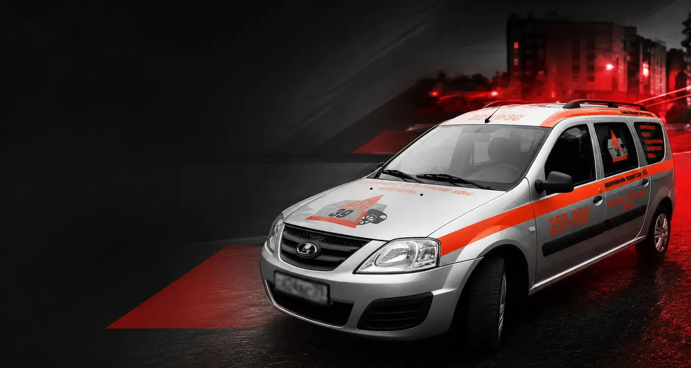
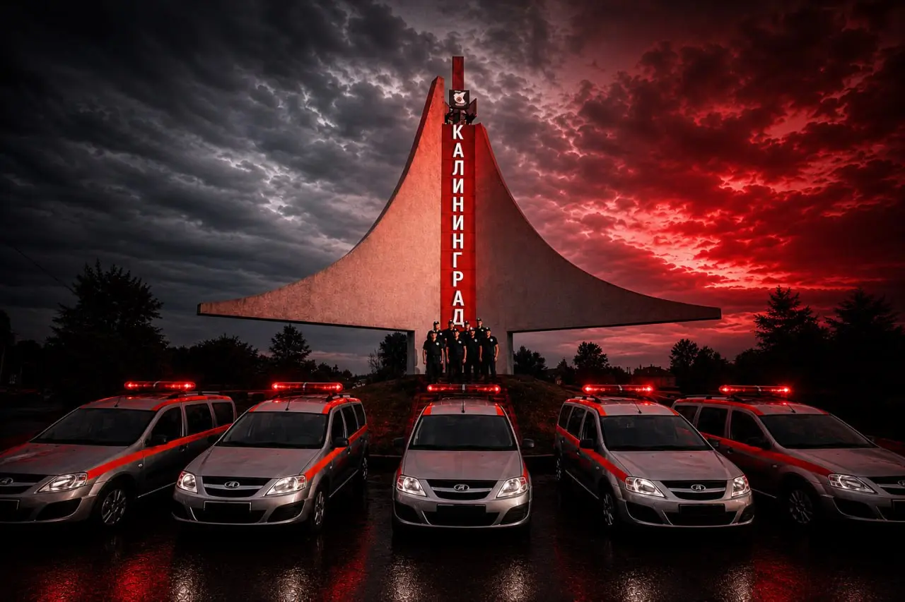
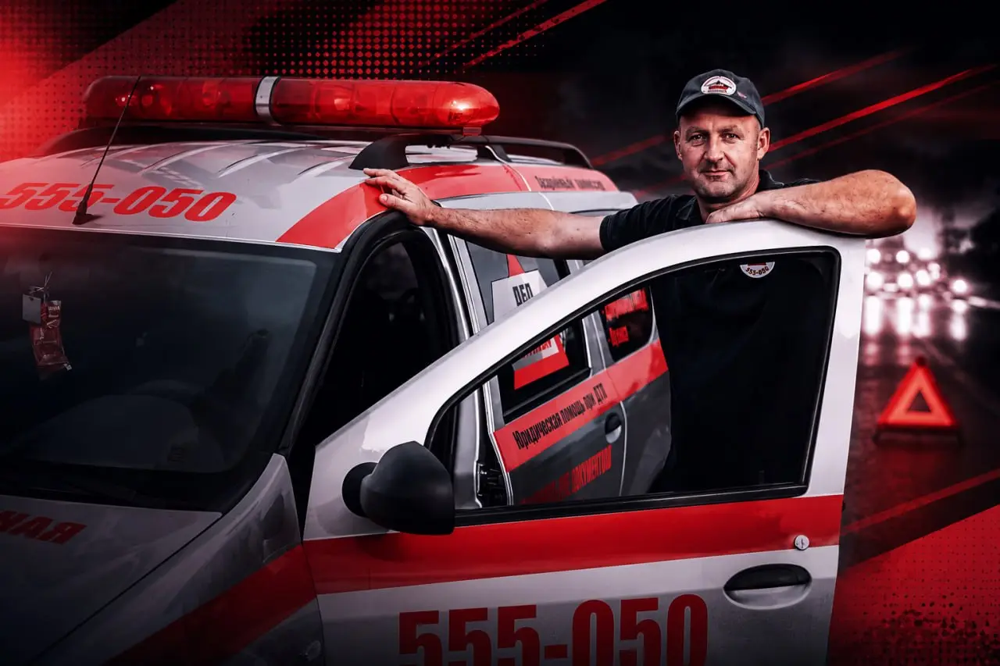

★★★★★
«Приехали быстро, специалист отличный, грамотно решил проблему и объяснил порядок дальнейших действий».

Включите аварийную сигнализацию, заглушите двигатель и оцените, есть ли пострадавшие.
Установите знак аварийной остановки и не меняйте положение машин без необходимости.
Опишите ситуацию — мы подскажем первые действия и направим комиссара.
Помощь на месте и после ДТП
Не просто заполняем бумаги. Помогаем сохранить важные доказательства, выбрать корректный способ оформления и пройти следующие этапы без лишней неопределённости.
Оценим ситуацию, организуем фиксацию обстоятельств, поможем заполнить документы и дадим план дальнейших действий.
Все услуги → 02 / ДокументыПроверим, подходит ли ситуация под упрощённое оформление, и поможем избежать ошибок в извещении.
Подробнее → 03 / ОценкаОрганизуем оценку повреждений и подготовку документов для урегулирования страхового случая.
Подробнее → 04 / ЗащитаРазберём спор со страховой, документы по ДТП и возможные варианты защиты ваших интересов.
Подробнее →Как это работает
Вы всегда понимаете, что происходит сейчас и какой следующий шаг.
Позвонить комиссару →Уточняем адрес, наличие пострадавших, количество автомобилей и характер ситуации.
Пока комиссар в пути, подсказываем, как обеспечить безопасность и что подготовить.
Фото, схема, данные участников, документы и важные детали происшествия.
Разбираем подходящий порядок и объясняем дальнейшее обращение в страховую.

Мы не принимаем решение за участников и не заменяем сотрудников ГИБДД. Наша задача — помочь спокойно оценить обстоятельства, корректно их зафиксировать и не упустить важное.
Объясняем без юридического тумана.
Проверяем документы и детали фиксации.
Остаёмся на связи после оформления.
Отзывы клиентов
«Приехали быстро, специалист отличный, грамотно решил проблему и объяснил порядок дальнейших действий».
Клиент отмечает быстрый приезд, помощь с документами, понятные объяснения и аккуратную работу без потери качества.
География выезда
Выезжаем в Калининград и основные города западной части области. Срок подачи зависит от свободного экипажа, точного адреса и дорожной обстановки.
Не нашли свой населённый пункт? Позвоните — сразу проверим возможность выезда.
Раздел сайта
Что важно зафиксировать, как не потерять детали и почему помощь специалиста особенно важна в сложной аварии.
Читать 2026-03-25Разбираем типовые ошибки при оформлении, спорные ситуации и порядок действий после столкновения.
Читать 2026-03-25Как проходит фиксация повреждений на месте ДТП и что помогает избежать вопросов со стороны страховой.
ЧитатьКоротко о важном
Если ситуация нестандартная, лучше описать её комиссару по телефону.

Когда нужна помощь с фиксацией обстоятельств, выбором порядка оформления, документами или последующим обращением в страховую.
Иногда — да, по европротоколу. Это зависит от обстоятельств аварии, наличия пострадавших, количества автомобилей, разногласий и других условий. Комиссар поможет оценить ситуацию.
Паспорт, водительское удостоверение, СТС и полис ОСАГО. До фиксации не перемещайте автомобили, если они не создают угрозу безопасности и не препятствуют движению.
Нет. Комиссар помогает зафиксировать обстоятельства и оформить документы, но не заменяет ГИБДД, суд или страховую компанию.
Да, возможность выезда уточняется по адресу. Назовите место ДТП оператору — он проверит ближайший экипаж и сориентирует по времени.
Цена зависит от места, обстоятельств и состава необходимых услуг. Точную стоимость оператор назовёт до выезда после короткого уточнения ситуации.
Помощь на дороге
Назовите адрес и коротко опишите происшествие. Мы подскажем первые действия и проверим ближайший экипаж.
ул. Юрия Гагарина, 106, корп. 6, офис 5
Калининград